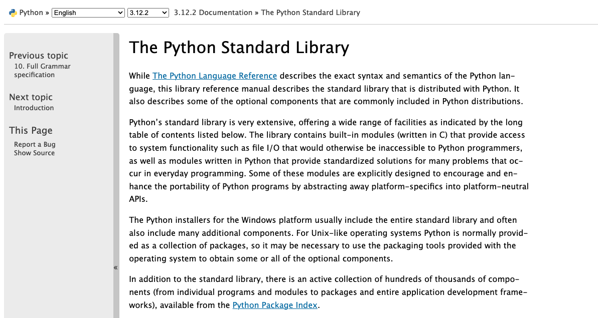
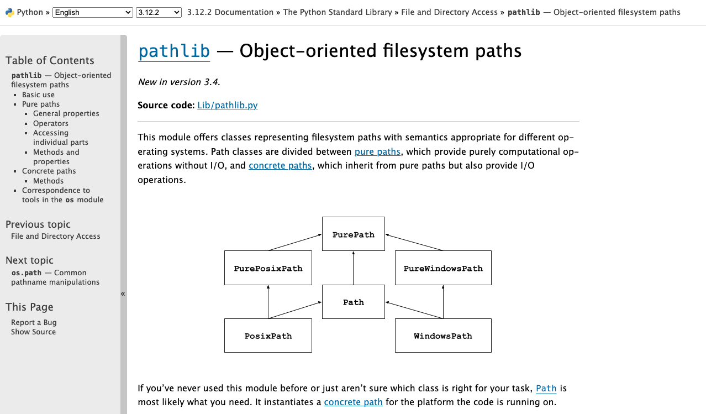

Complex Python: Classes & Comments
Now that we have refreshed our knowledge of Python, it’s time to start getting more advanced in how we use Python, especially to work with data.
Classes
So far we’ve learned how to store data in different data types (integers, strings, floats, etc…) and structures (lists and dictionaries). We’ve also learned how to use for loops to manipulate our data, conditionals to change the data flow, and functions to encapsulate our code and make it reusable and generalizable.
Now that we’ve started to learn the range of Python syntax, we can start putting it all together. One of the main ways we can do that is with Classes.
Let’s take a look at a possible code answer for the final quick exercise in Python Refresher II: Advanced Python.
def check_movie_release(movie):
if movie['release_year'] < 2000:
print(f"{movie['name']} was released before 2000")
else:
print(f"{movie['name']} was released after 2000")
return movie['name']
recent_movies = []
favorite_movies =[
{
"name": "The Matrix I",
"release_year": 1999,
"sequels": ["The Matrix II", "The Matrix III", "The Matrix IV"]
},
{
"name": "Star Wars IV",
"release_year": 1977,
"sequels": ["Star Wars V", "Star Wars VI", "Star Wars VII", "Star Wars VIII", "Star Wars IX"],
"prequels": ["Star Wars I", "Star Wars II", "Star Wars III"]
}
]
for movie in favorite_movies:
result = check_movie_release(movie)
if result is not None:
recent_movies.append(result)
print(recent_movies)This code snippet contains a function called check_movie_release that returns a movie name if it was released before a certain year.
We also have a list of dictionaries called favorite_movies that contains information about the release year and sequels of two movies.
Right now this code works well if we just have our existing favorite_movies, but what if we wanted to build upon this initial list to add more metadata and information about each movie, and also maybe even reuse this code in multiple scripts? Then we might want to consider rewriting the code into a class.
While dictionaries are great for describing complex data within a single object, a class is really useful to encapsulate both data and functions in a single cohesive unit.
A class is a particular type of object. We can create (“instantiate”) an object of a class and store it as a variable. A variable therefore contains (technically, contains a reference to) an instance of a class.
Sounds complex but let’s break it down…
We’ve already used a lot of built-in classes. Strings, lists, dictionaries are all classes. We can have Python tell us what kind of class it is using the built-in function type().
>>> a = [1,2,3]
>>> type(a)
<class 'list'>
>>> b = "123"
>>> type(b)
<class 'str'>Python classes are great for storing complex data structures, but they can also be simple.
Here’s how you define a simple class that does nothing.
# Define a class
class Blank:
pass # Pass means "Move along, please. Nothing to see here."
# Create an instance of the class and invoke it
Blank()To first define a class, we need to use the keyword class followed by the name of the class (which can be anything!) and then a semi colon. All the logic of the class is indented (just like with functions, loops, and conditionals) and then we call the class similar to a function, using its name and parentheses to pass arguments to the class.
In this case, since the class has no actual logic in it, just the keyword pass, which is a reserved keyword in Python and that tells Python to do nothing. So when we call the class, nothing actually happens. For any class, when you invoke it, it executes the __init__ method, which is another built in method from Python (this one is called a constructor method). Thus, since our example above didn’t define any logic for the built-in __init__ method, nothing happened.
Simple Class
Let’s define a class that actually does something when it’s initialized.
class Movie:
def __init__(self, name):
self.movie_name = name
a_movie = Movie("The Matrix")
a_movie.movie_nameSo similar to our initial favorite_movies variable, we are creating a way to store data about movies. However, in this example we’ve created a class that has an initial method (which is really just a function!) that takes the argument we pass and assigns it to something called self.
Self references the class instance that is created when you call a class, which is why self is the first argument to any function defined in a class. You can read more about class scope here.
Advanced Class
Let’s try making a more complex version of our Movie class.
class Movie:
"""Contains methods for data about a movie
Methods:
--------
add_directors
add_release_year
calculate_age
"""
def __init__(self, name):
self.movie_name = name
self.directors = []
self.release_year = None
self.age = 0
self.sequels = []
self.prequels = []
def add_directors(self, directors):
"""Adds a list of directors of the movie
Method argument:
-----------------
directors(list) -- A list of people who director the movie
"""
if isinstance(directors, list) is False:
directors = [directors]
self.directors.extend(directors)
def add_release_year(self, year):
"""Adds the release year of the movie
Method argument:
-----------------
year(integer or string) -- A year the movie was released
"""
self.release_year = int(year)
def add_sequels(self, sequels):
"""Adds a list of sequels to the movie
Method argument:
-----------------
sequels(list) -- A list of sequels to the movie
"""
if isinstance(sequels, list) is False:
sequels = [sequels]
self.sequels.extend(sequels)
def add_prequels(self, prequels):
"""Adds a list of prequels to the movie
Method argument:
-----------------
prequels(list) -- A list of prequels to the movie
"""
if isinstance(prequels, list) is False:
prequels = [prequels]
self.prequels.extend(prequels)
def calculate_movie_age(self):
"""Calculates the age of the movie
"""
self.age = 2024 - self.release_year
a_movie = Movie("The Matrix I")
a_movie.add_directors(["Lana Wachowski", "Lilly Wachowski"])
a_movie.add_release_year(1999)
a_movie.add_sequels(["The Matrix II", "The Matrix III", "The Matrix IV"])
a_movie.calculate_movie_age()
print(a_movie.age)
print(a_movie.add_directors.__doc__) # To view the docstring for the methodSo what’s going in this code block?
First we’re taking our Movie class and expanding it so that it can contain more information about each movie. We still only initially create the class with one argument - the movie’s name. But we’ve also added additional attributes to the __init__ function. First, we have directors, which holds a list; then release year, which is an integer; age, which is also an integer; sequels, which is a list; and prequels, which is also a list.
Do you notice that the syntax here looks like a dictionary? That’s because we can use a similar pattern to dictionaries for creating our attributes.
To make it even more clear this is what the __init__ method would look like as a function that return a dictionary:
def store_a_movie(name):
movie = dict() #Could also write {}
movie.movie_name = name
movie.directors = []
movie.release_year = None
movie.age = 0
movie.sequels = []
movie.prequels = []While this function is somewhat similar to our Movie class, we’ve also added a number of functions, which we call methods to the class.
The first method add_directors takes two arguments, self and directors. Just like in the __init__ method, self represents the class instance and directors is a list of directors. In the __init__ method, we define the directors attribute on self as an empty list. Then in our add_directors method we extend this initial empty list, adding the new directors to the list.
What if we wanted to add a method for printing out an entire movie’s information? We could try looping through the class object and print out each attribute. Or we could use the built-in __dict__ functionality that prints out the values for a class.
def get_movie_info(self):
"""Prints out the movie's information
"""
for key, value in self.__dict__.items():
print(f"{key}: {value}")We can then call this method on our a_movie object.
a_movie.get_movie_info()This is a very simple example of a class, but it’s a good start. We can use classes to store complex data structures and then use methods to manipulate that data. We can also use classes to create reusable code that can be used in multiple scripts.
If we wanted to make our Movie class even more complex, we could change how we store prequels and sequels. Right now we’re just storing them as lists, but we could also store them as instances of the Movie class. This would allow us to store more information about each sequel and prequel, and then we could programmatically calculate the age of each sequel and prequel.
Here’s an example of how we could do that:
class Movie:
"""Contains methods for data about a movie
Methods:
--------
add_directors
add_release_year
calculate_age
"""
def __init__(self, name, release_year=None):
self.movie_name = name
self.directors = []
self.release_year = release_year
self.age = 0
self.sequels = []
self.prequels = []
def add_directors(self, directors):
"""Adds a list of directors of the movie
Method argument:
-----------------
directors(list) -- A list of people who director the movie
"""
if isinstance(directors, list) is False:
directors = [directors]
self.directors.extend(directors)
def add_release_year(self, year):
"""Adds the release year of the movie
Method argument:
-----------------
year(integer or string) -- A year the movie was released
"""
self.release_year = int(year)
def calculate_movie_age(self):
"""Calculates the age of the movie
"""
self.age = 2024 - self.release_year
def add_sequel(self, sequel, release_year):
"""Adds a sequel to the movie
Method argument:
-----------------
sequel(string) -- The name of the sequel
release_year(integer) -- The release year of the sequel
"""
sequel_movie = Movie(sequel, release_year)
self.sequels.append(sequel_movie)
def add_prequel(self, prequel, release_year):
"""Adds a prequel to the movie
Method argument:
-----------------
prequel(string) -- The name of the prequel
release_year(integer) -- The release year of the prequel
"""
prequel_movie = Movie(prequel, release_year)
self.prequels.append(prequel_movie)
def get_movie_info(self):
"""Prints out the movie's information
"""
for key, value in self.__dict__.items():
if key in ['sequels', 'prequels']:
print(f"{key}: {[movie.movie_name for movie in value]}")
else:
print(f"{key}: {value}")
def get_release_year(movie):
"""Returns the release year of the movie"""
return movie.release_year
def calculate_movie_order(self):
"""Calculates the order of movies based on release year
"""
all_movies = [self] + self.sequels + self.prequels
all_movies.sort(key=get_release_year)
return [movie.movie_name for movie in all_movies]
a_movie = Movie("The Matrix I")
a_movie.add_directors(["Lana Wachowski", "Lilly Wachowski"])
a_movie.add_release_year(1999)
a_movie.calculate_movie_age()
a_movie.add_sequel("The Matrix II", 2003)
a_movie.add_sequel("The Matrix III", 2003)
a_movie.add_sequel("The Matrix IV", 2021)
a_movie.add_prequel("The Matrix 0", 1998)
a_movie.get_movie_info()
print(a_movie.calculate_movie_order())This is a more complex version of our Movie class. We’ve added two new methods, add_sequel and add_prequel, which take the name of the sequel or prequel and the release year of the sequel or prequel. We then create a new instance of the Movie class and append it to the sequels or prequels list. We also added a new method, calculate_movie_order, which sorts all the movies based on their release year and then returns a list of the movie names in order. To do this we use the built-in sort method, which sorts a list in place, and the key argument, which takes a function that returns a value that the list should be sorted by. In this case, we use the get_release_year method to get each release year, and then sort the list of movies by their release year.
This type of programming is called object-oriented programming and it’s a very powerful way to organize your code. It’s also a very common way to organize code in Python, and you’ll see it often, even if you don’t write it yourself.
Quick Exercise for Practice (Optional But Recommended)
- Try copying the
Movieclass into yourfirst_script.pyand then create a new instance of the class. Then try adding a sequel and prequel to the movie and then printing out the movie’s information. Remember that if you’re creating a new movie, you’ll need to create a new variable to save the new instance of theMovieclass and then add the directors and release year to the movie. - Try adding a function to the
Movieclass that saves their rating. Then try adding a rating to the movie and printing out the movie’s information.
Additional Reading
Commenting and Documentation
You’ll notice in our Movie class that we’ve added a lot of comments. Comments are a way to add human-readable text to your code that explains what the code is doing. Comments are not executed by the Python interpreter, so they don’t affect the code’s behavior. They are just there to help you and other people understand the code. I highly recommend adding comments to your code, especially if you’re working on a team or if you’re writing code that you might not look at for a while.
Inline Commenting
The most common type of comment is the inline comment, which is a comment that is on the same line as the code. Inline comments are usually used to explain a particular line of code.
movie = dict() #Could also write {}You’ll notice that the comment is after the code and is preceded by a # symbol. This tells Python that the rest of the line is a comment and should not be executed.
Block Commenting
Block comments are comments that span multiple lines. They are usually used to explain a block of code, like a function or a class.
def store_a_movie(name):
"""Stores a movie in a dictionary
Function argument:
-----------------
name(string) -- The name of the movie
"""
movie = dict() #Could also write {}
movie.movie_name = name
movie.directors = []
movie.release_year = None
movie.age = 0
movie.sequels = []
movie.prequels = []In this example, we have a block comment that explains what the store_a_movie function does. The comment is enclosed in triple quotes, which tells Python that the comment spans multiple lines. This is a common way to write block comments in Python.
print(a_movie.add_directors.__doc__) # To view the docstring for the methodYou’ll notice that earlier we were able to print out the block comment for the add_directors method. This is because the block comment is actually a special type of comment called a docstring that is used to document a function or a class. The docstring is the first thing that appears in a function or class and is enclosed in triple quotes. It’s a good idea to add a docstring to every function and class you write, as it helps other people understand your code and also helps you remember what your code does.
Documentation
In addition to comments, the other main resource for understanding how to use a class or function is the documentation. The documentation is a set of instructions that explains how to use a class or function.

So for example, if we wanted to learn more about classes, we could visit the Python Documentation on Classes. This documentation explains how to define a class, how to create an instance of a class, and how to use methods in a class. It also explains how to use inheritance, which is a way to create a new class that inherits the attributes and methods of an existing class.
Learning to read documentation is a critical skill, so would highly recommend taking a look at the documentation when it is available.
Python Libraries
So you’re probably wondering when to use classes? Mostly we won’t be delving into code complicated enough to require to write your own classes, but you will be using lots of code that is based on this pattern. That’s because the class is the primary way that Python organizes its standard library and the wider ecosystem of external libraries.
Let’s dig into the Python documentation to understand more!

Here’s the Python Standard Library. We’ve already been using this documentation, but let’s scroll down to the Pathlib module.

Now click on the link to the pathlib module.

First take a look at the source code! Notice how it’s organized, and try and find the documentation for the class Path (hint use control F).
Let’s take a look at the methods in the class Path https://docs.python.org/3/library/pathlib.html#methods. How would we would print out the current working directory using pathlib?
Let’s try importing in Pathlib into our script.
Imports are Important
We can easily bring classes into other code using the import keyword (another reserved word!), which does some magic to allow us to use classes defined in other files. This is how we can use parts of the Python Standard Library that aren’t directly built into the base language. It’s also how we use modules written by other programmers from the larger Python community. We can even use import to import our own classes.
import pathlibThe syntax for importing is import followed by the name of the module. In this case, we’re importing the pathlib module. Once we’ve imported the module, we can use the classes and functions defined in the module. There’s two ways to do this. We can either use the . operator to access the class or function:
pathlib.Path()Or we can use the from keyword (reserved word) to import a specific class or function from the module:
from pathlib import PathBoth options work exactly the same when we use them in our code, but the second option is a little more concise and is often used when we only need to use one class or function.
With import statements, you can also alias the module or class you’re importing. This is often used to make the code more readable or to avoid conflicts with other classes or functions that have the same name.
import pathlib as plNow if we want to use the Path class, we can just use pl.Path() instead of pathlib.Path().
File Input and Output
So now that we’ve explored ways to import pathlib, let’s try using this module. We’ll start by using pathlib to print out the current working directory.
from pathlib import Path
current_directory = Path.cwd()
print(current_directory)But pathlib is useful not just for printing out working directories, it can also let us load in files.
Up to know you’ve had to hand enter data but in Python you can use various libraries to manipulate and read in data.
Let’s try it out with Pathlib by passing in one of the datasets from the Responsible Datasets in Context Project that we have been reviewing each week. You can use any of the datasets, but I’m selecting the one by Os Keyes and Melanie Walsh. “U.S. National Park Visit Data (1979-2023) – Responsible Datasets in Context.” Responsible Datasets in Context, June 1, 2024. https://www.responsible-datasets-in-context.com/posts/np-data/.
Once you’ve downloaded the data, you should have a file called US-National-Parks_RecreationVisits_1979-2023.csv. Now let’s try using pathlib to read in the data.
from pathlib import Path
file = Path('US-National-Parks_RecreationVisits_1979-2023.csv')
print(file, type(file))Now depending on where you file is located, you might need to change the path (often files are in your Downloads folder, in which case you might write Users/user_name/Downloads/US-National-Parks_RecreationVisits_1979-2023.csv). Remember computers need the exact path, so if you’re not sure where your file is located, you can use the cwd method to print out the current working directory and then add the file name to the end of the path.
Now if this code worked, it should show you the exact file path of your spreadsheet and then the type of the object, either <class 'pathlib.PosixPath'> or <class 'pathlib.WindowsPath'>. Not to get too complicated but this is because the Path class is a subclass of the PosixPath class (not really going to get into subclassing but think of it as building classes on top of one another - like Lego or Jenga).
We can also look at the methods built-in to the Path class. One in particular is useful for us read_text which reads in the contents of a file and returns it as a string. Read more about it here https://docs.python.org/3/library/pathlib.html#pathlib.Path.read_text and test it out in your script.
from pathlib import Path
file = Path('US-National-Parks_RecreationVisits_1979-2023.csv')
print(file, type(file))
print(file.read_text())Now when you save you script and rerun your code in the terminal, you should now see the entirety of our csv file in your terminal. If you try saving that to a variable and checking the type you should see that it’s a string.
So now we can simply manipulate that string so that we don’t have to hand enter the data.
So far we’ve been using Pathlib to work with files, but there are number of libraries and even some methods built into Python for reading in and writing files.
For example we could use the open built-in function in Python.
To open a file for reading (input), we just do:
input_file = open("US-National-Parks_RecreationVisits_1979-2023.csv","r")
text = input_file.read()
print(text)
input_file.close()Here, we use the open function to open a file in mode “r” (read). open returns a File Object that provides methods for reading and writing. In this case, the read method reads in data from the input_file file object and stores it as a string in text. We could even just pass in our Path object to the open function.
file = Path('US-National-Parks_RecreationVisits_1979-2023.csv')
input_file = open(file,"r")
text = input_file.read()
print(text)
input_file.close()At the end, we can close the file to save some memory, but even if we don’t do it explicitly, Python will eventually catch on to the fact that it isn’t being used anymore and do it for us. This isn’t a huge concern unless you’re opening thousands of files or the files you’re opening are very, very large.
Often, you’ll see file handling used with the with keyword (reserved word again!):
with open("US-National-Parks_RecreationVisits_1979-2023.csv","r") as input_file:
print(input_file.read())This is functionally the same as our last example. The only difference is that the file is automatically closed at the end of the block. You can use whichever convention you like, but keep both in mind because they’re both pretty common in the wild.
File Output
File output is very similar. We just use mode w, which overwrites the file specified. We can also use x (which only works for new files) or a (which appends data at the end of the file). Read the open docs for all the details and also take a look at this table.
| Character | Mode | Description |
|---|---|---|
r |
Read (default) | Open a file for read only |
w |
Write | Open a file for write only (overwrite) and will also create a new file if it doesn’t exist |
a |
Append | Open a file for write only (append) |
r+ |
Read+ | Write open a file for both reading and writing |
x |
Create | Create a new file |
To understand file output, let’s try working with a file that doesn’t exist. Try pasting this code in your script.
f = open("new_text.txt","w")
for i in range(0,100):
f.write(str(i**2)+"\n")Once you run it, you should see a new file in your directory called new_text.txt, which should be a text file, containing a list of numbers. We created those numbers using the built-in range function and the write method.
Here, there’s something just a little tricky. i and i**2 are integers, but the file object in this case expects a string. If we try to use f.write(i**2) instead, we’ll get an error: TypeError: write() argument must be str, not int.
To get around this, we can convert from int to string using the built-in str class constructor str() to create a new string that’s the string representation of the integer we pass in. So even though the integer 4 and the string “4” look the same, they’re different objects and different ways to represent data.
For the same reason that we can’t do f.write(4), we also can’t do "4"+4 (or, for that matter, 4+"4"). We have to explicitly tell python whether we want it to treat each value as an integer or a string. "4"+str(4) produces “44” while int("4")+4 returns 8.
The second new thing here is the newline character “”, which is technically called a LF or Line Feed. This inserts a line break between characters in a string. If you don’t include it, all the numbers will be on the same line.
Quick Exercise for Practice (Optional But Recommended)
- Try writing adding a function to your
Movieclass that saves the movie’s information to a file. Then try writing the information to a file using theopenfunction. - Try adding a function to your
Movieclass that reads in a file and sets the movie’s information based on the file. Then try reading in the information from a file using theopenfunction.
If you’re getting stuck here’s a possible solution, if you click on the toggle below it will show you the solution.
Here’s a function to save the movie’s information to a file:
def save_movie_info(self, file_name):
"""Saves the movie's information to a file
Method argument:
-----------------
file_name(string) -- The name of the file to save the movie's information to
"""
with open(file_name, "w") as f:
f.write(f"Movie Name: {self.movie_name}\n")
f.write(f"Directors: {', '.join(self.directors)}\n")
f.write(f"Release Year: {self.release_year}\n")
f.write(f"Age: {self.age}\n")
f.write(f"Sequels: {', '.join([sequel.movie_name for sequel in self.sequels])}\n")
f.write(f"Prequels: {', '.join([prequel.movie_name for prequel in self.prequels])}\n")Now you can call this function on your a_movie object and pass in the name of the file you want to save the information to.
a_movie = Movie("The Matrix I")
a_movie.add_directors(["Lana Wachowski", "Lilly Wachowski"])
a_movie.add_release_year(1999)
a_movie.add_sequel("The Matrix II", 2003)
a_movie.add_sequel("The Matrix III", 2003)
a_movie.add_sequel("The Matrix IV", 2021)
a_movie.add_prequel("The Matrix 0", 1998)
a_movie.calculate_movie_age()
a_movie.save_movie_info("movie_info.txt")Here’s a function to read in a file and set the movie’s information based on the file:
def read_movie_info(self, file_name):
"""Reads in a file and sets the movie's information based on the file
Method argument:
-----------------
file_name(string) -- The name of the file to read the movie's information from
"""
with open(file_name, "r") as f:
lines = f.readlines()
self.movie_name = lines[0].split(": ")[1].strip()
self.directors = lines[1].split(": ")[1].strip().split(", ")
self.release_year = int(lines[2].split(": ")[1].strip())
self.age = int(lines[3].split(": ")[1].strip())
self.sequels = [Movie(sequel.strip()) for sequel in lines[4].split(": ")[1].strip().split(", ")]
self.prequels = [Movie(prequel.strip()) for prequel in lines[5].split(": ")[1].strip().split(", ")]Now you can call this function on your a_movie object and pass in the name of the file you want to read the information from.
a_movie = Movie("The Matrix I")
a_movie.read_movie_info("movie_info.txt")
a_movie.get_movie_info()